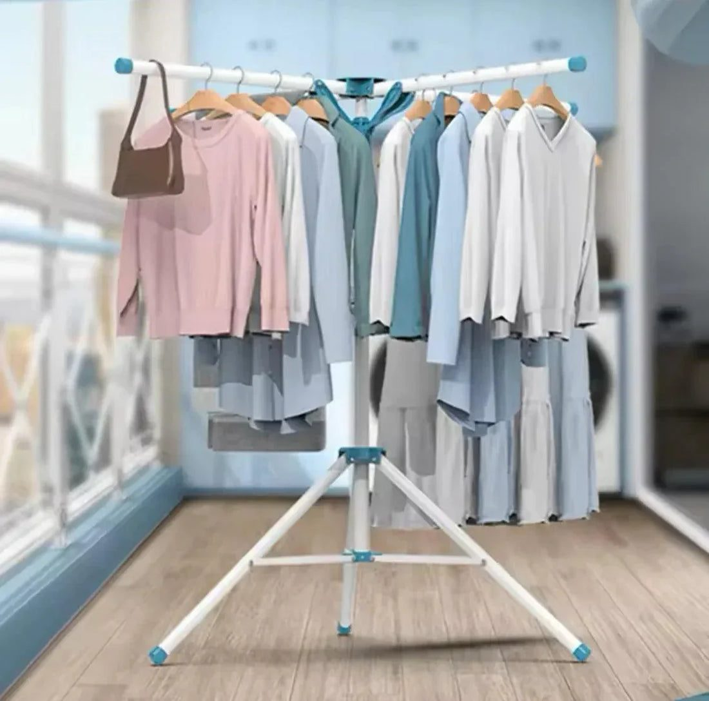
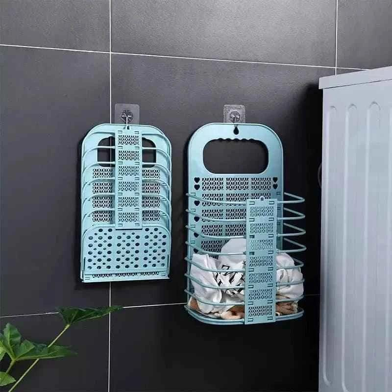

In many Pakistani homes, children's dirty clothes have one destination: the floor. School uniforms are dropped by the door, socks hide under the bed, and the cricket kit sits in a corner until it smells. Mothers spend much of the evening collecting clothes from every room before the washing machine can even start. It is tiring, and it teaches children that someone else will always clean up after them.
Teaching children to manage their own laundry is a life skill, and it starts with something very simple: a hamper in their room and a few clear rules. This guide explains how to build the habit at every age.
Why it matters
Children who take care of their clothes learn responsibility, organisation and respect for others' work. These habits help when they go to hostels, universities or live abroad, which many Pakistani young people eventually do. Starting early also makes the household run more smoothly, especially in busy families with working parents or no full-time help.
Put a hamper where clothes are removed
The most important rule is placement. If the hamper is in the bathroom but children change in their room, clothes will end up on the bedroom floor. Place a hamper exactly where they undress. Foldable fabric or mesh hampers are light, easy to move and can be folded away when needed. Choosing a fun colour or letting the child pick one helps them feel ownership. Browse a range of laundry baskets and hampers to find one sized for a child's room.
Age-appropriate tasks
Children can do more than we expect if tasks match their age:

- Ages 3 to 5: put dirty clothes in the hamper, match socks, carry small items to the laundry area
- Ages 6 to 9: sort clothes into whites and colours, fold towels, put folded clothes in drawers
- Ages 10 to 13: load the washing machine with supervision, hang clothes on the drying rack, fold their own clothes
- Ages 14 and up: run a full wash, iron their school uniform, manage their own laundry day
Start small and add tasks gradually.
Sorting made easy
Use two hampers or a divided hamper so children sort as they go: one for whites like school shirts and one for colours. This saves time on laundry day and teaches them why whites are washed separately. Label each section with a picture for younger children.
Drying and folding together
In most Pakistani homes, clothes are dried on the roof, a balcony line or a drying rack. An umbrella-style drying rack on the balcony is easy for children to reach and use. Make folding a family activity on the weekend, perhaps with a favourite programme on in the background. Teach a simple folding method and accept that early results will not be perfect.
School uniform routine
Uniforms cause the most stress on school mornings. Set a rule: every evening, the uniform goes in the hamper if dirty or on a hanger if it can be worn again. On Sunday, check that there are enough clean uniforms for the week, and let older children iron their own shirts. This prevents the Monday morning panic of a missing tie or a dirty shirt.

Praise and consistency
Children respond to encouragement. Praise effort, not perfection. A simple chart with stickers for younger kids can make it fun. Be consistent: if clothes on the floor are picked up by a parent every time, the habit never forms. A gentle rule, such as clothes left on the floor are not washed this week, works well with older children.
Make the room easy to keep tidy
A tidy system is easier to maintain. Give each child hooks for clothes they will wear again, a drawer for each type of clothing, and space in the cupboard at their height. When everything has a home, keeping the room neat becomes much easier.
Final thoughts
Teaching children to handle their own laundry starts with a hamper in the right place and grows with age-appropriate tasks. With patience, praise and consistency, the floor stays clear, laundry day becomes faster and your children gain a skill they will use for life.